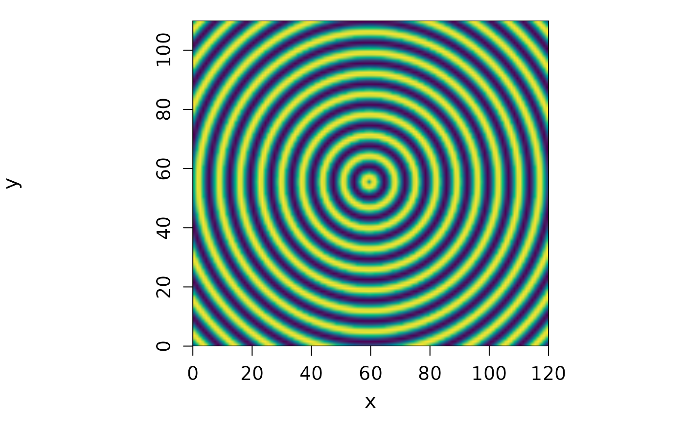

Create an in-memory GDAL raster dataset from R data
Arguments
- data
numeric vector, matrix or array
- bbox
numeric vector of length 4 representing the bounding box with the order: xmin, ymin, xmax, ymax
- srs
character spatial reference system string
- data_type
character GDAL data type name (e.g., "Float32", "Int16"), if NULL (default) and the data has no
gisattribute, "Float32" is used.- no_data_value
numeric NoData value to set for all bands. If NULL (default) a sensible default NoData value for the specified
data_typeis used.- nbands
numeric number of bands
- xsize
numeric number of pixels in x direction
- ysize
numeric number of pixels in y direction
Details
If data has been generated from read_ds it will
include a gis attribute containing the necessary spatial metadata. If this
is the case, the spatial parameters are automatically extracted from the
gis attribute.
Examples
v2m <- r_to_MEM(
as.vector(c(
sin(
sqrt(outer(1:120 - 60, 1:110 - 55, function(x, y) x^2 + y^2)) * 0.9
)
)),
nbands = 1,
xsize = 120,
ysize = 110
)
v2m
#> C++ object of class GDALRaster
#> Driver : In Memory Raster (MEM)
#> DSN :
#> Dim : 120, 110, 1
#> CRS :
#> Res : 1.000000, 1.000000
#> Bbox : 0.000000, 0.000000, 120.000000, 110.000000
plot(v2m)
